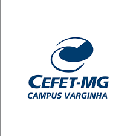
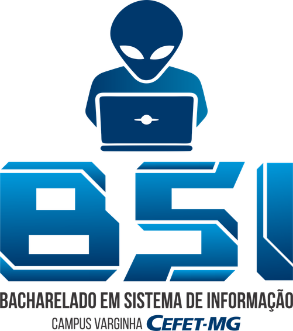
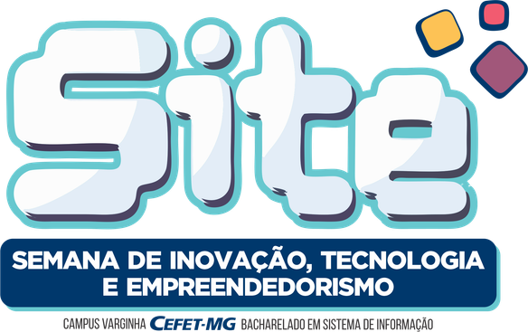
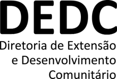
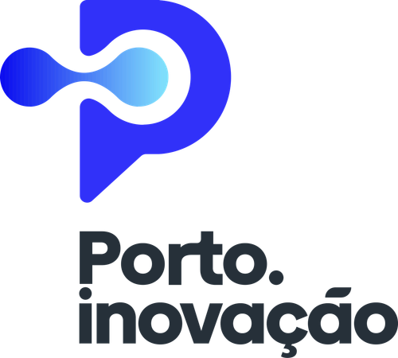
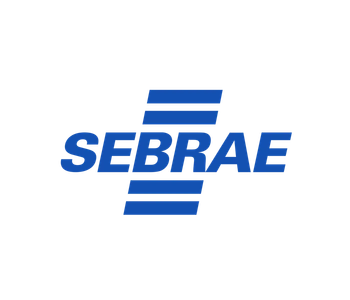

Desafio BNCC na Educação Básica
A Resolução CNE/CEB nº 1/2022 incluiu as normas de Computação na Educação Básica.
⚠️ Realidade Escolar: Escolas públicas sofrem com severa escassez de docentes habilitados e metodologias atraentes, gerando desinteresse discente e evasão tecnológica.
A Era da IA Generativa como Copiloto
A explosão de modelos de linguagem grande (Gemini, Claude, ChatGPT) redefiniu a engenharia de software.
💡 Oportunidade Pedagógica: Em vez de vetar, ensina-se a IA como tutora socrática, reduzindo a frustração com mensagens de erro e acelerando o raciocínio autoral.
Compromisso Social CEFET & FAPEMIG
Devolutiva concreta dos investimentos públicos à comunidade de Varginha e do Sul de Minas.
🌱 Inclusão & Vocações: Abertura dos laboratórios de informática universitários para estudantes da rede pública, fomentando equidade e despertar vocacional para carreiras STEM.





